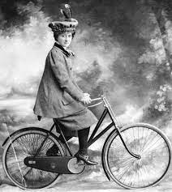
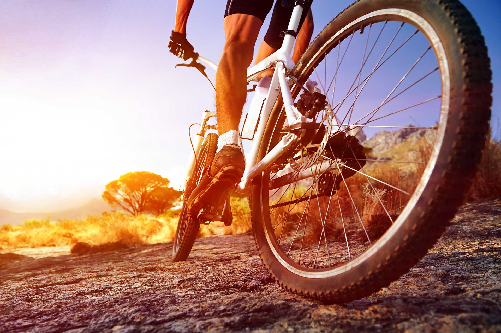

O Ciclismo surgiu a partir de 1890. Entre 1890 e 1900 nasceram grandes provas, que ao longo dos anos se tornaram clássicos, alguns ainda existem hoje como o Liège-Bastogne-Liège. Em 1891 acontece a primeira grande prova de Audax, ou "Randonneurs", entre Paris e Brest (na França), ida e volta, num total de 1200 Km. A prova é a mais tradicional do ciclismo mundial e não tem caráter competitivo. Os participantes correm contra o tempo, com diversas regras, para chegar ao final em uma longa prova de logística e superação. Atualmente, para poder participar dos 1200 Km, o ciclista deve conseguir realizar num mesmo ano, as provas de 200, 300, 400 e 600 Km, ganhando o chamado "brevet" para realizar o 1200 Km. No Brasil essa prova é realizada desde 2003 com autorização do Audax Club Parisien.
O mundo moderno inventou também o ciclismo estático, ou seja, a prática do ciclismo em bicicletas ergométricas e em locais fechados, casa, academia, clube, etc., um exercício aeróbico alternativo e seguro ideal para indivíduos que desejam maior segurança, sustentação e facilidade de manejo do que o ciclismo de estrada ou de pista, e é indicado para pessoas que apresentam determinados tipos de lesões de joelhos, quadris, coluna e que não podem caminhar.
Foi na Inglaterra, em meados do século XIX, que o ciclismo surgiu, época em que o aperfeiçoamento do veículo possibilitou o alcance de maiores velocidades. O ciclismo esportivo é regido por diversas regras, e geralmente enquadra-se em quatro categorias: provas em estradas, provas em pistas, provas de montanha (Mountain Bike ou MTB) e BMX e é praticado com diversos tipos e modelos de bicicletas.